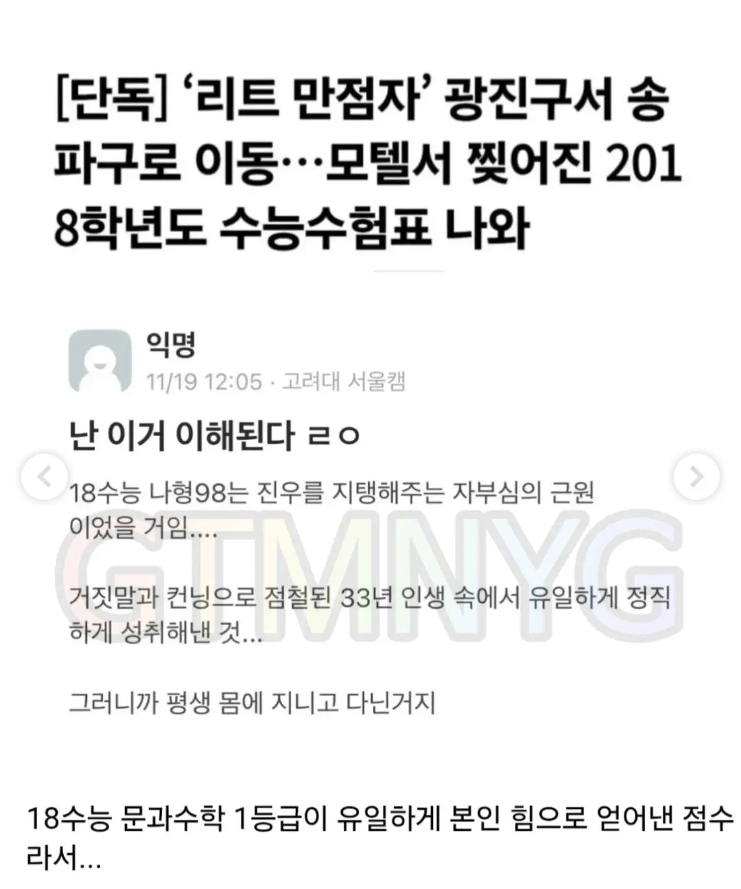
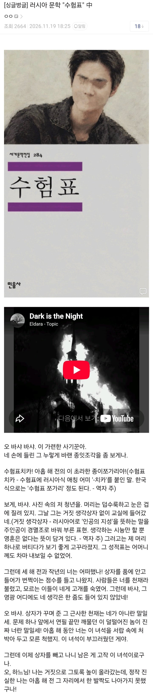

배경지식


배경지식

수험표치카는ㅋㅋㅋㅋㅋㅋㅋㅋㅋ
아니 근데 소리로만 들으면 진짜 러시아 이름 같은데?
스옴피오치카니까 이탈리아에서 이주한 느낌이긴하네
ㅋㅋㅋㅋㅋㅋㅋㅋㅋㅋㅋㅋㅋㅋㅋㅋㅋㅋㅋㅋㅋㅋㅋㅋㅋㅋㅋㅋㅋㅋㅋㅋㅋㅋㅋㅋㅋㅋㅋㅋㅋㅋㅋ
노문학좀 봤는데 ㅋㅋ
캐릭터, 저지른 일과 파국적 결말이 ㄹㅇ 문학적임ㅋㅋㅋㅋㅋ
좀 치네 ㅋㅋ
역주 저거 안나 카레니나에서 본거같은데ㅋㅋ
밈음사 감성 미쳤네 ;;
ㅋㅋㅋㅋ ㅅㅂ 밈음사 이름 개쩌네 ㅋㅋㅋ
수험표치카랑 믿음사 표지 ㅅㅂㅋㅋㅋㅋ
민음사 ㄷㄷ
민음사 표지가 ㅈㄴ 리얼하네 ㅋㅋㅋㅋㅋㅋ
존나잘쓰네
유튜브 왜재생안됨
고유명사 요상한 말로 번역해놓은거도 민음사답네
역자주 ㅋㅋㅋㅋㅋㅋㅋ
세상이 어지러우면 문학력이 폭발한다 ㅋㅋㅋㅋㅋ
- 역자 주 ㅋㅋㅋㅋㅋㅋ
수혐표치카는 시발앜ㅋㅋㅋㅋㅋㅋㅋㅋㅋㅋㅋㅋㅋㅋㅋㅋㅋㅋㅋㅋㅋㅋㅁ
바샤를 여러 이름으로 불러서 좆같이 헷갈리게 하는거 ㅇㄷ
역자 주 ㅅㅂㅋㅋㅋㅋㅋㅋㅋㅋㅋㅋㅋㅋㅋㅋ
수험표치카 이지랄 ㅋㅋ